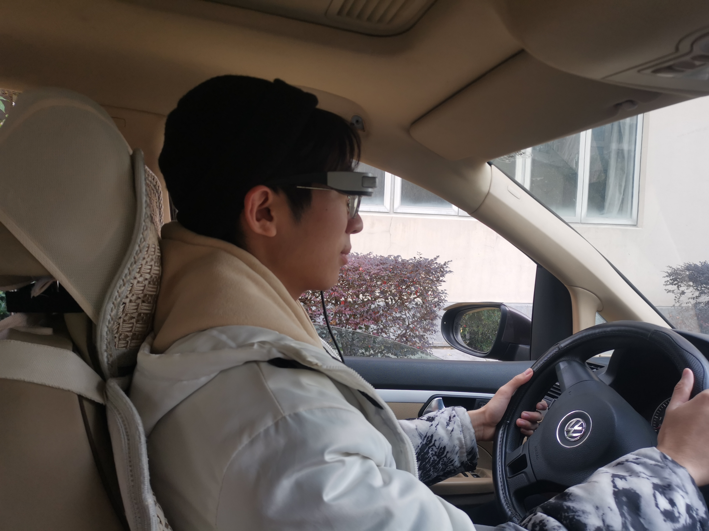

Master degree candidate | From ECNU Shanghai
欢迎访问我的个人主页！我是张博远，目前正在上海华东师范大学攻读深度学习硕士学位。我的研究兴趣包括智能交通和情感检测。
此外，我还是一名mod作者，曾为Brotato制作了多个mod，吸引了数十万粉丝。
如果您想联系我，欢迎通过电子邮件与我取得联系：z16603265095@gmail.com。
Welcome to my personal page! I am Boyuan Zhang, currently pursuing a master student in deep learning at East China Normal University (ECNU), Shanghai. My research interests include intelligent transportation and emotion detection.
Additionally, I am a mod author, having created several mods for Brotato, which have garnered a fanbase of several hundred thousand users.
If you'd like to get in touch, feel free to email me at z16603265095@gmail.com.
多次荣获“优秀学生”，“优秀学生奖学金”奖项
Recipient of "Outstanding Student" and "Outstanding Student Scholarship" multiple times
曾任华东师范大学通信与电子工程学院对外联络部部长，多次举办大型活动
Formerly served as the Director of the External Relations Department of the School of Communication and Electronic Engineering at East China Normal University, organizing numerous large-scale events.
National-Level ECNU Undergraduate Innovation and Entrepreneurship Training Program
项目名称：
- 基于深度学习的道路交通标志自动识别
- Road Traffic Sign Automatic Recognition based on Deep Learning
- 基于深度学习的道路交通流量追踪
- Road Traffic Flow Tracking based on Deep Learning
所获奖项：上海市，二等奖
Shanghai Municipality, Second Prize, National College Student Mathematics Modeling Competition
所获奖项：优秀报告奖
Excellent Presentation Award, 7th ECNU Innovation and Entrepreneurship Forum
所获奖项：上海赛区，二等奖
Shanghai Region, Second Prize, 2021 TI Cup National College Student Electronic Design Competition
所获奖项：国家级，三等奖
National Level, Third Prize, 2022 Intel Cup